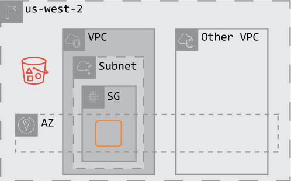

In this lab we will be putting the finishing touches on some infrastructure. We want to have an EC2 instance that grabs the Amazon Resource Numbers (ARNs) for our VPC, subnet, EC2 instance, and S3 bucket.
Please note: If you have installed the AWS CLI using previous WGU instructions you will have created a profile named bootcamp. When using any below commands you must add --profile bootcamp to ensure you have proper permissions.
aws s3 mb
aws ec2 create-subnet \
--vpc-id
--cidr-block
Copy the SubnetID from the return response.
aws ec2 create-network-acl \
--vpc-id
Copy the NetworkAclID from the return response.
aws ec2 describe-network-acls \
--query
Copy the NetworkAclAssociationID from the return response. If you are not receiving a result change your output to JSON via --output json.
Please note: You must surround the value of our query expression with the backtick (`) symbol.
aws ec2 replace-network-acl-association \
--association-id
--network-acl-id
aws ec2 run-instances \
--image-id
--count
--instance-type
--iam-instance-profile Name=
--security-group-ids
--subnet-id
When you have completed these tasks your architecture can be diagrammed as:
